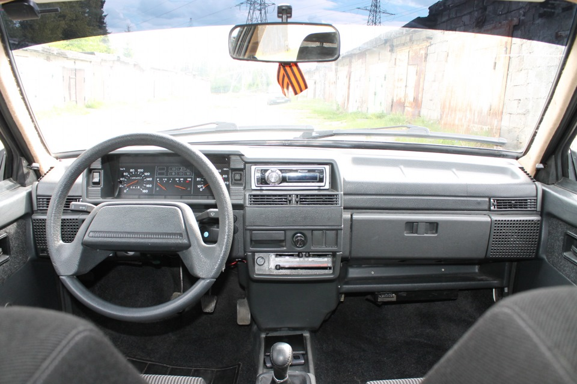

ВАЗ-2115 «Самара-2» (простореч. название «пятнашка») — "рестайлинг" ВАЗ-21099 - автомобиль начали собирать в 1997 году в опытно-промышленном производстве. От предшественника новая модель отличается новой крышкой багажника, новыми задними фонарями со вставкой между ними, бамперами, окрашенными в цвет кузова, спойлером багажника с дополнительным стоп-сигналом, обтекателями порогов, молдингами дверей, салон оставался прежний от модели ВАЗ 21099, а с 2001 года он был запущен и на заводской конвейер, которая получила новый салон. В 2005 году он полностью заменил собой модель ВАЗ-21099. Производство было остановлено в 2012 году. Всего с 1997 года было выпущено 752 957 штук.
В 1990-х годах Волжский автомобильный завод начал работу над модернизацией седана ВАЗ-21099. Мелкосерийное производство седана ВАЗ-2115 началось на опытно-промышленном производстве АвтоВАЗа в 1997 году. ВАЗ-2115 стал первенцем из линейки под условным названием «Самара-2».Была существенно изменена задняя часть кузова автомобиля, а именно крышка багажника и световые приборы. В передней части новая модель отличалась скруглённой формой капота и передних крыльев, новыми фарами, бамперами, окрашенными в цвет кузова. Предлагался заводской обвес: спойлер багажника с дополнительным стоп-сигналом, обтекатели порогов, молдинги дверей (обвесы для первого поколения изготавливались за рубежом). Новые бамперы и молдинги были сделаны из достаточно хрупкого пластика, в отличие от бамперов первого поколения семейства , которые были выполнены из материала, обладающего свойством восстанавливать свою форму после удара, или резиновых молдингов многих иностранных автомобилей, что вызвало многочисленные нарекания покупателей. Салон первых выпусков все ещё был заимствован от модели 21099, но с 2000 года значительные изменения коснулись и его: появилась эргономичная передняя панель с приборами от VDO, так называемая «европанель», предлагались электростеклоподъемники, электрозеркала, возможна была и установка передних сидений с электроподогревом. Первоначально в планах модернизации линейки Самара-2 было изменение не только экстерьера кузова и отделки, но и усовершенствование подвески, трансмиссии и тормозной системы. Однако на первых этапах запуска в производство эти узлы были заимствованы от модели 21099 без значительных изменений. Автомобиль получил более обтекаемые формы, благодаря чему ушли в прошлое угловатые очертания экстерьера, а также удалось уменьшить Cx до 0.429. С 2000 года устанавливается регулируемая травмобезопасная рулевая колонка и руль, рулевая рейка, а также передние тормозные механизмы от семейства автомобилей ВАЗ-2110. Гораздо удобнее стала погрузка вещей в багажник — теперь погрузочная высота находилась на уровне бампера. Автомобили продавались в двух комплектациях — «норма» и «люкс» (последняя отличалась внешне установкой противотуманных фар и колпаков на колёса, а по оснащению — подголовниками сидений второго ряда, более дорогой обивкой сидений и дверей, маршрутным компьютером, подогревом передних сидений, зеркальцем в солнцезащитном козырьке переднего пассажира). Исполнение молдингов на кузове и бамперах менялось дважды. Если до начала 2008 года их изготавливали из светло-серого пластика, то впоследствии стали окрашивать в цвет кузова. К концу 2008 года на дверях появились новые, более изящные узкие молдинги. Первое время «родственные» автомобили ВАЗ-21099 и ВАЗ-2115 выпускались на заводе параллельно, пока в 2004 году первое поколение Lada Samara не было снято с производства.
До 2000 года автомобили ВАЗ-2115 выпускались с карбюраторными двигателями ВАЗ-21083, но затем они были заменены инжекторным 8-клапанным двигателем ВАЗ-2111 (от семейства автомобилей ВАЗ-2110) с распределенным впрыском, который позволял развить бо́льшую мощность, расходовать меньше топлива и быстрее прогреваться. Кроме того, электронная система управления двигателем следила за уровнем токсичности выхлопных газов, таким образом двигатель удовлетворял требованиям стандарта Евро-2. Такие же двигатели получили позднее и новые автомобили ВАЗ-2114/2113. С 2007 года его сменил более новый, усовершенствованный двигатель ВАЗ-11183 (от семейства автомобилей Лада Калина), с увеличенным до 1596 см³ рабочим объёмом и мощностью 80,9 л.с, удовлетворяющий требованиям стандарта Евро-3. Отличительные особенности от двигателей семейства 2110 — катализатор находится не под днищем, а установлен на выпускном коллекторе, на двигатель надета пластиковая декоративная крышка, вместо алюминиевого впускного ресивера устанавливается пластиковый, фазированный впрыск топлива, отсутствие обратной магистрали - регулятор давления топлива совмещён с бензонасосом (так называемый топливный модуль). Также с 2010 года мелкими сериями устанавливались 16-клапанные двигатели ВАЗ-21124 объемом 1.6 литра и мощностью 81-89 л.с. (также от автомобилей семейства ВАЗ-2110) с фазированным впрыском, также устанавливалась и более совершенная версия 8-клапанного двигателя ВАЗ-2111, увеличенная до рабочего объема 1.6 литров, которая носила обозначение ВАЗ-21114. На автомобили ВАЗ-2115 и ВАЗ-2113 также устанавливались 16-клапанные двигатели ВАЗ-21126 объёмом 1,6 литра от LADA Priora мощностью 98 л. с. С 2011 года устанавливается электронная педаль газа и электронный блок управления двигателем от автомобилей Лада Granta, таким образом, двигатели стали отвечать экологическим требованиям Евро-4. Пятиступенчатая МКПП автомобилей была заимствована от семейства Лада Самара первого поколения, и оставалась больным местом из-за тяжёлого переключения передач и низкого качества изготовления.
Ранний вариант:
Поздний вариант:
Салон ранний от 2108/2109/21099 (высокая панель) и поздний (европанель):

Двигатель ранний карбюраторный от 2108/2109/21099 и инжекторный: